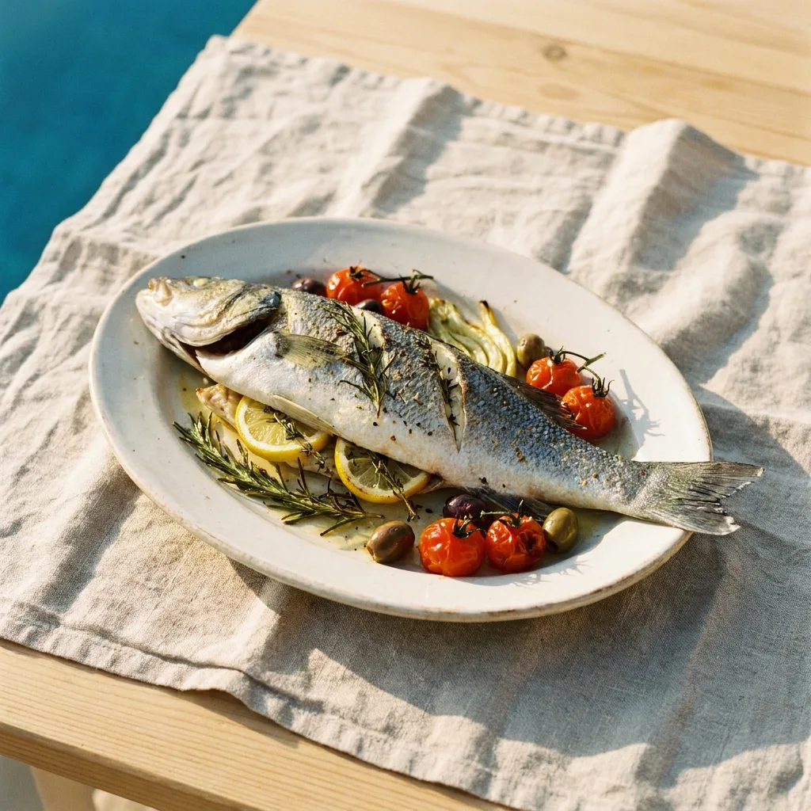
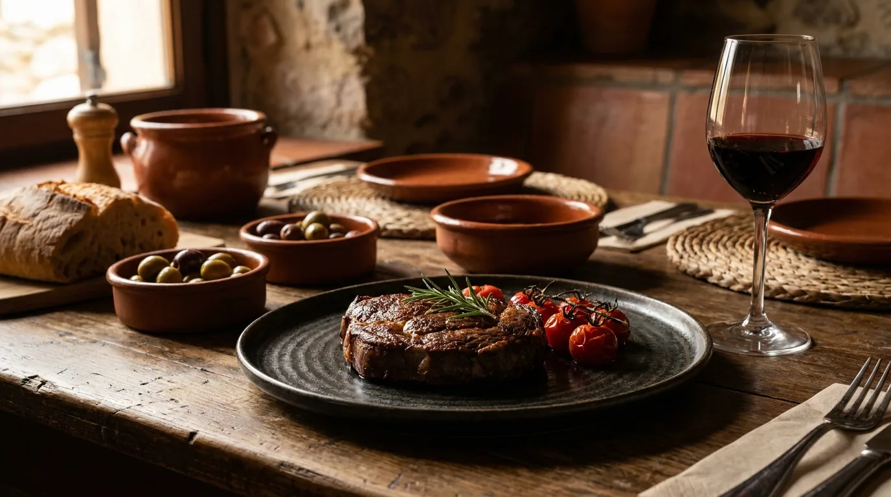
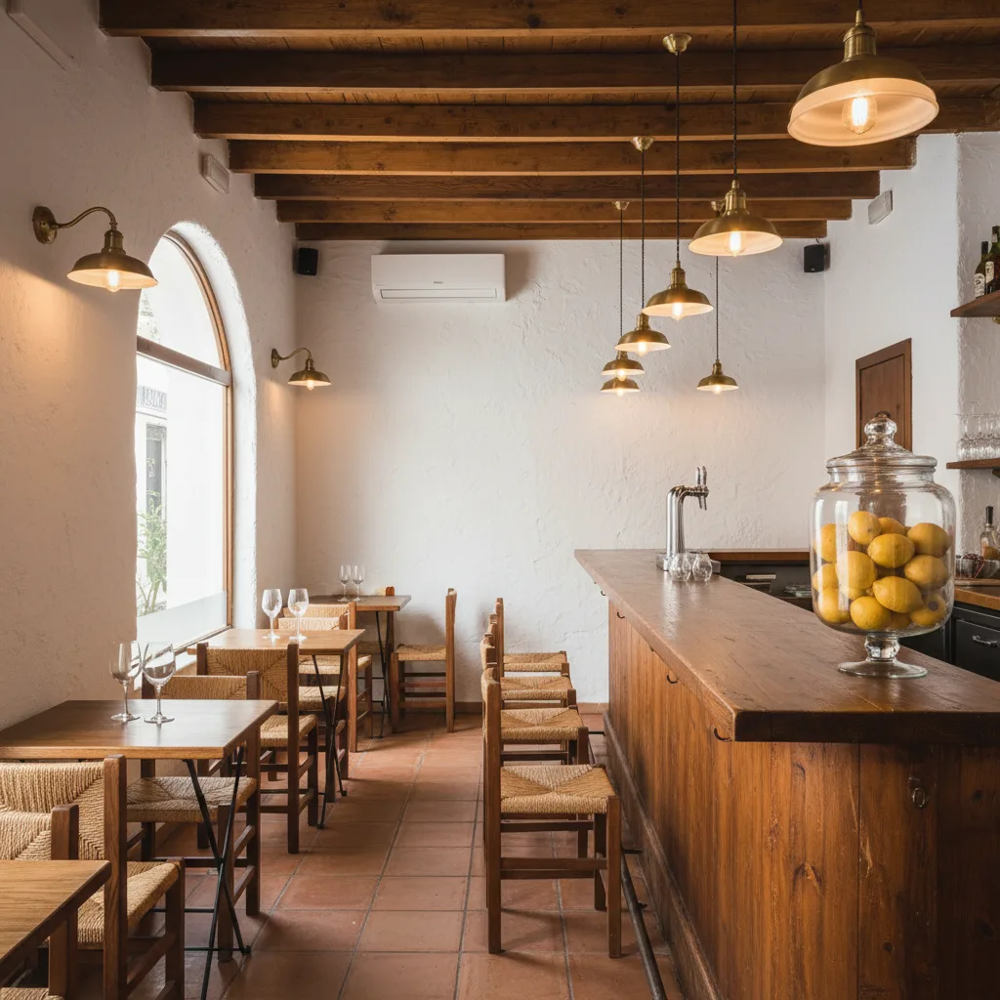

Bar · Restaurante
Calp · Av. Europa, 24
Razo
Cocina mediterránea junto al mar.
Carta · A pasos de playa La Fossa
Cocina mediterránea junto al mar.
Carta · A pasos de playa La Fossa
La casa
Avenida Europa, a un paseo de la arena. Aquí se come tranquilo, sin prisas y sin pretensiones.
Un bar-restaurante a pasos del paseo de La Fossa. Cocina mediterránea, tapas, carnes y pescados con algún guiño rioplatense puntual (chivito, milanesa napolitana).
Desayunos desde las 09:00, comidas, sobremesa y cenas. Sin prisa, con servicio cercano.
La historia, el equipo y el origen de los toques rioplatenses se cuentan con vosotros — éste es el espacio reservado para vuestras palabras.
Desde las 09:00 · Precios cerrados
Para empezar el día sin prisas, a un paso de la arena. La única franja con precios cerrados de toda la carta.
Para picar
Lo de siempre, bien hecho. Para empezar.

Pulpo · imagen referencial
Del mar
Cerca de la Fossa. El producto manda.

Lubina
Carnes
Especialidad de la casa. A la plancha, al punto.

Entrecot · imagen referencial
Guiños rioplatenses
Chivito y milanesa a la napolitana
[Por qué un toque rioplatense en la carta — lo cuentan con vosotros.]
Pan en mano
Frescas
Forno

El salón
Para terminar
Selección de postres caseros y opciones del día.
Los nombres exactos y la oferta diaria se definen con vosotros.
Bebidas
Carta completa de vinos (blancos, rosados, copas, otras referencias) a definir con vosotros.
Información de alérgenos
Cualquiera de nuestros platos puede adaptarse a las necesidades de comensales con alergias o intolerancias. Por favor, indícalo al camarero antes de pedir. Disponemos de la información completa de alérgenos según el reglamento UE 1169/2011.